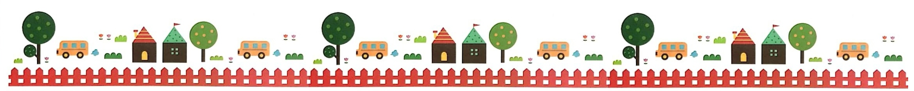

금강뿌리어린이집
어린이집소개
반별소개
연간일정
보육과정

spring
summer
fall
winter
2020년 3월
신입원아오리엔테이션&부모교육
요리활동
[지역사회] 어린이건강체험관-서구보건소
실내놀이터
2020년 4월
식목일 행사
[지역사회] 국립생물자원관
1학기 부모상담
생일파티 (3,4월)
2020년 5월
어린이날, 어버이날 행사
[지역사회] 어린이뮤지컬-검단급식센터
나비공원
[지역사회] 장미공원-서곶근린공원
2020년 6월
[지역사회] 꽃이랑책이랑-청라생태공원
생일파티 (5,6월)
김포공항
부모참여활동
2020년 7월
키즈카페
1학기 신체검사
[지역사회] 어린이방문교육-검단급식센터
물총놀이 & 물놀이
2020년 8월
여름가정학습
물총놀이 & 물놀이
[지역사회] 정서진
생일파티 (7,8월)
2020년 9월
[지역사회] 녹청자도요지
2학기 부모상담
생일파티 (9,10월)
[지역사회] 포도밭
2020년 10월
[지역사회] 국화축제-드림파크
수도국산박물관
부모참여활동(가을나들이)
동화마을
2020년 11월
어린이과학관
기후 체험관
[지역사회] 에코빌리지
부모참여활동(김치담그기)
2020년 12월
2학기 신체검사
생일파티 (11,12월)
[지역사회] 산타파티
겨울가정학습
2021년 1월
뮤지컬 관람
부모참여활동(작품전시회 및 재롱발표회)
예절교육
[지역사회] 노인정 방문-세배드리기
2021년 2월
생일파티 (1,2월)
[지역사회] 어린이건강체험관
[지역사회] 검단선사박물관
수료식